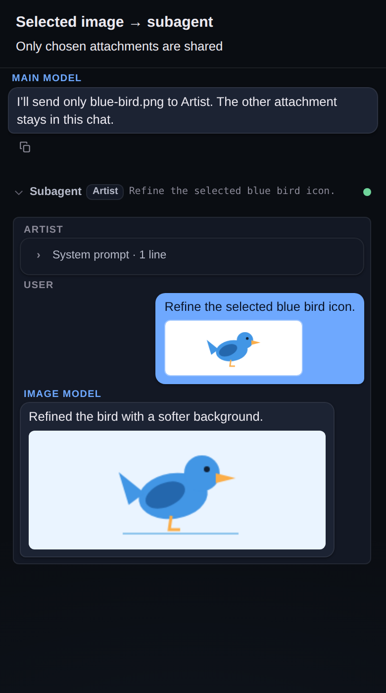

Subagent image generation
Overview
An agent pinned to an image model can generate artwork natively through OpenRouter or Gemini. Generated pixels appear in its nested transcript and return to the parent assistant as vision content, rather than disappearing into an empty successful response.
Usage
Connect an OpenRouter or Gemini provider in Settings → Providers.
In Settings → Project → Agents, pin an agent to an image model and write its drawing instructions.
Approve a
subagentdelegation to that agent, or send an@command:
@Artist Draw a simple blue bird icon on a white background.Tap the resulting image to enlarge it. When a reply includes text and artwork, both remain visible in the nested bubble. Direct @agent image results persist as a subagent tool card and an assistant billing row, so the artwork remains after reload. Generating an image does not attach it to the composer draft or start another chat turn. Normal subagent authorization still applies.

Illustrative fixture captured with the real mobile chat renderer; the example artwork is drawn locally, not generated by a paid provider.
Send only selected attachments
Chat images are never forwarded automatically. The main model first calls list_chat_attachments, chooses the desired imageRef values, and passes them in subagent.images:
{
"task": "Describe this screenshot and suggest a simpler layout.",
"agent": "Reviewer",
"images": ["message:12:0"]
}Omitting images, or passing [], sends no images even when the parent chat has attachments. References are scoped to the current chat. At most eight images and 24 MiB of encoded input can be selected; relist attachments after an ENOTFOUND response.
| Reference | Points at | Stays valid |
|---|---|---|
message:<seq>:<i> | attachment i of a persisted user message | until the message is deleted |
draft:<sha256> | a composer draft image, by its contents | across reordering, not replacement/removal |
generated:<seq>:<i> | image i a subagent returned on its persisted subagent result row | until the row is deleted |
list_chat_attachments returns drafts, messages, and generated arrays with metadata and imageRef only — never pixels.
The selected pixels are resolved server-side after delegation authorization and included in the nested user message, live prompt preview, and settled transcript. They are not copied to project files, removed from the draft, or returned as newly generated artwork. Use a vision-capable model. Selecting an image for a Gemini image-chat or supported OpenRouter image model also enables reference-image editing; Imagen predict rejects image inputs rather than silently dropping them.
POST /api/tools/subagent accepts the same optional images reference array. The composer does not automatically add draft images to an @agent command.
Edit earlier artwork
Generated images can be sent back in. To ask for a change ("make the bird red"), the main model lists attachments, picks the generated:<seq>:<i> reference, and passes it to an image agent that accepts reference images:
{
"task": "Make the bird red; keep the composition.",
"agent": "Artist",
"images": ["generated:41:0"]
}When a chat is reloaded, the pixels are not resent to the model in replayed history. Instead the replayed subagent tool feedback carries generatedImageRefs, so the model still knows which references to use.
Approval card
When a delegation shares images, the subagent approval card lists them by name before you approve. A stale reference is flagged as missing, and that call fails with ENOTFOUND. The card receives names only, never pixels.
Behavior
OpenRouter's dedicated image catalog (
/images/models) resolves toPOST /imageswith a prompt,n: 1, and a non-streaming JSON response. The parser acceptsdata[].b64_jsonandmedia_type, and preservesusage.costfor billing. Catalog data can supply selection metadata only; it cannot replace the app connection's URL or credentials.OpenRouter image-capable chat models use
/chat/completionswithmodalities, and parse inlineimages[].image_url.urlfrom streamed deltas or message objects.Gemini Imagen uses
:predictwith one instance andsampleCount: 1. Gemini image chat models usestreamGenerateContentwithresponseModalities: ["TEXT", "IMAGE"], and parseinlineData(orinline_data). Thinking-image parts are not exposed as artwork.Dedicated image calls do not advertise tools. They retain the chat loop's abort signal, idle timeout, error handling, and per-round usage accounting.
The normalized
imageevent carries{ type, data, mimeType }. The subagent result stores each generated image's pixels once, incontent, which is also what the parent receives as vision feedback. The nested assistant turn'simagesholds pointers ({ type, mimeType, contentIndex }) intocontent. Older rows with inlineimages[].datastill render. Base64 is omitted from the textual tool feedback.Each generated image must be inline PNG, JPEG, WebP, or GIF and at most 12 MiB of encoded data; at most eight images are accepted per run. Remote output URLs are rejected rather than fetched with provider credentials. Image-only calls returning no pixels fail with
ENO_IMAGEinstead of claiming success.OpenRouter
/imagesreceives explicitly selected images asinput_references, validated against the model's reported minimum and maximum reference count before sending. Gemini image chat uses inline image parts. Imagen input-image editing and asynchronous/long-running prediction APIs are not implemented.
Verification
node scripts/test-subagent-images.js
node scripts/test-subagent-image-inputs.js
npm run test:subagent-prompt
node scripts/test-read-image-preview.jsThe generation tests use mocked providers, not paid upstream calls.